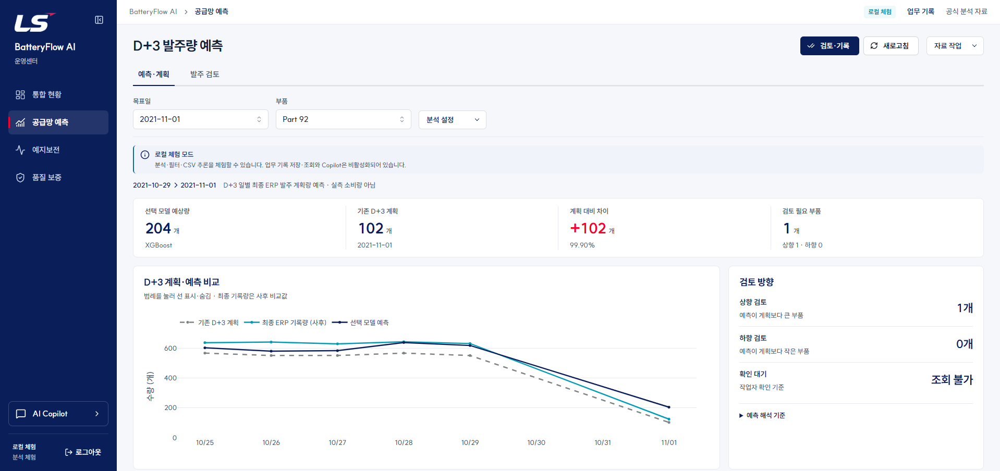
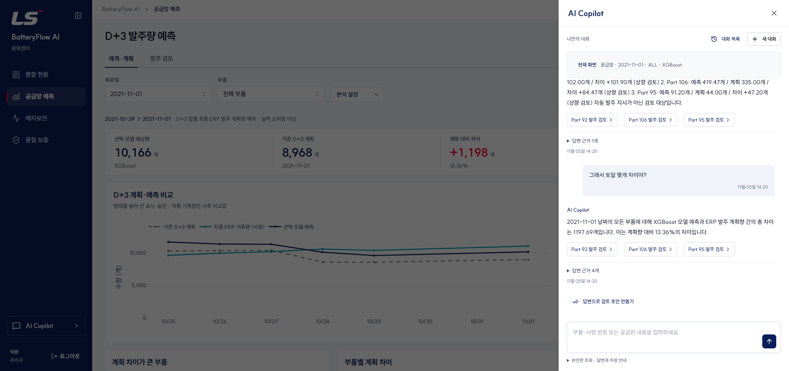
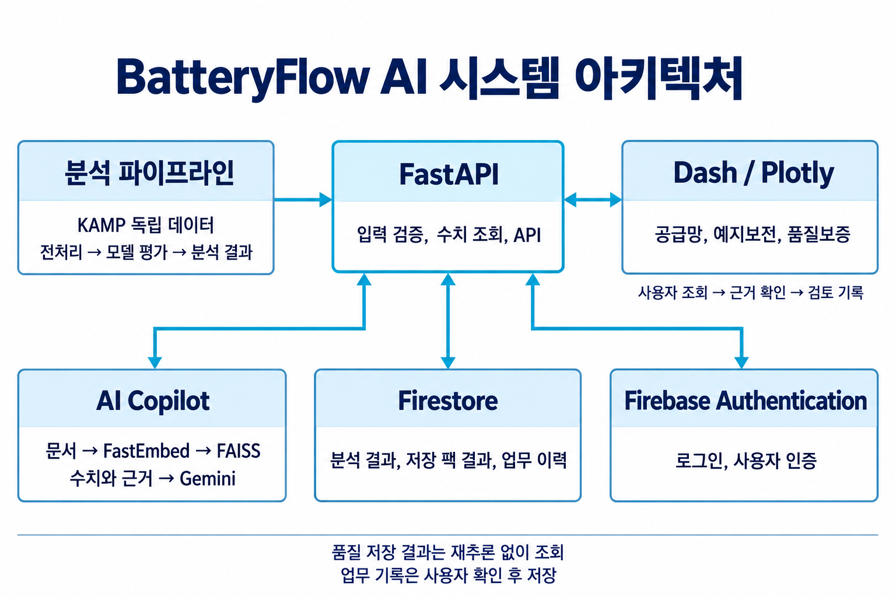

Case Study
BatteryFlow AI
원본을 다시 대조해
처음 결론을 바로잡았습니다.
일별 ERP 발주 계획량을 예측해, 담당자가 기존 D+3 계획과 나란히 비교·검토하도록 했습니다.
- 본인
- 발주량 분석·예측, FastAPI·Dash 서비스, AI Copilot 구현·통합
- 팀원
- 유현경: 예지보전·디자인 / 최우찬: 품질보증·Firestore
- AI 지원
- 구현 초안·수정과 원본 재검증 (시간 경계·정렬 규칙·실패 사례 검증은 본인이 설계)
- 원본 재검증17일 / 49일
공통 부품 90% 이상 반복된 날
이월 가정으로 재평가 - 데이터 정리17,364행
같은 부품·시각에 수량이 다른
306개 그룹을 분리 - Copilot 순위 오류서버 규칙으로 수정
빠뜨리던 감소 부품을
차이 절댓값 순으로 보완

01 정답과 시간 경계를 먼저 확인했습니다.
같은 부품·시각에 서로 다른 수량이 기록된 306개 그룹을 분리했습니다. 예측 시점에 알 수 있는 데이터만 쓰도록 시간 경계를 검사한 뒤 모델을 비교했습니다.
02 원본을 다시 대조해 처음 결론을 철회했습니다.
처음 비교에서는 7일 이동평균이 기존 계획보다 오차가 36.7% 낮았습니다. 검토 알림을 날짜별로 나눠 보니 12개 목표일 중 6일은 기존 계획이 거의 모든 부품에서 0이었습니다.
원본 로그에서 관측일 49일 중 17일은 공통 부품의 90% 이상에서 수량 82칸이 직전 관측일과 같았습니다. 이를 이월 의심일로 분류하고, 추정 기준일로 계획을 다시 읽어 정답에서 제외한 뒤 9가지 방법을 재평가했습니다. 제공자의 운영 기록으로 확인한 사실이 아닌 자료 기반 보정 가정입니다.
| 방법 | CV 7일 MAE (개) | CV+회고 13일 중 계획보다 나은 날 | 판단 |
|---|---|---|---|
| 기존 D+3 계획 | 16.2 | - | 가장 강한 기준 |
| XGBoost | 15.9 | 9 / 13 | 운영 예측 |
| LSTM | 22.8 | 3 / 13 | 불채택 |
| 7일 이동평균 | 30.9 | 0 / 13 | 철회한 결론 |
서비스는 XGBoost 예측을 기존 계획과 나란히 보여 줍니다.CV 7일과 회고 6일 중 9일에서 일별 MAE가 더 작았지만, 일별 MAE 차이의 95% 구간(−3.1~+1.0개)이 0을 포함해 개선을 확정하지 않았습니다.
03 Copilot의 수치와 순위는 서버에서 확정했습니다.
“계획과 차이가 큰 부품 3개”를 물으면 감소 부품을 빠뜨리는 오류를 발견했습니다. 키워드만 확인하던 테스트도 이를 놓쳤습니다.
수치 조회를 문서 검색과 분리하고, 순위는 서버 규칙(차이 절댓값 순, 동률이면 부품 번호 순)으로 확정했습니다.
2021-11-01 · XGBoost 예측과 기존 계획의 차이 · 단위: 개
분석에서 서비스까지
- CSV 입력
- 입력 검사
- FastAPI 추론
- Dash 계획 비교
CSV 예측은 입력 자료를 비교하는 기능입니다. 공식 분석 자료의 검토 기록은 별도 검토 화면에서 확인 후 저장하며, 데이터 버전과 동시 수정을 검사합니다.
한계와 검증
- 처음 결론의 철회: 처음 평가(1,289행·12개 목표일)의 36.7% 개선은 휴일 이월 기록 때문에 기존 계획이 엉뚱한 날을 가리켜 생긴 결과였습니다. 당시에도 95% 구간(−13.6%~59.2%)이 0을 포함해 확정하지 않았고, 원본 대조 후 결론을 철회했습니다.
- 평가 규모: 정답으로 쓸 수 있는 날이 32일로 줄어, 시간순 교차검증 2개 구간(7개 목표일·111개 부품·743행)과 회고 6개 목표일(109개 부품·643행)로 평가했습니다. 회고는 이미 본 기간이라 독립 시험이 아닙니다.
- 이월 판정 기준: 직전 관측일과 공통 부품의 90% 이상에서 수량 82개 칸이 같으면 날짜 전체를 이월로 간주합니다. 실제로 갱신된 10/2·10/16 토요일은 정답에 포함했습니다. 원본 제공자의 운영 기록으로 확인한 규칙은 아닙니다.
- 예측 대상: 일별 최종 ERP 발주 계획량이며, 실제 소비량 예측과는 다릅니다.
충돌 306개 그룹·612행을 보존하고 Part 21·26을 격리했습니다. 0은 유지하고, 누락 날짜를 0으로 채우지 않았습니다. 학습 정답의 마지막 날짜가 다음 검증의 첫 예측 기준일보다 앞서는지 검사했습니다.
LSTM은 학습 자료가 적어 seed만 바꿔도 구간 오차가 14.8~23.7개로 흔들렸습니다(XGBoost 12.4~18.5개).
기존 계획과의 일별 MAE 차이는 CV 7일과 회고 6일, 합계 13일을 날짜 단위로 재표본화(4,000회)해 비교했습니다. Copilot 순위 규칙은 입력 순서 변경과 상위 3개 경계 동률 검사를 통과했습니다.
팀 개발 이후 개인 Firebase 환경 이전과 Cloud Run 배포는 개인적으로 진행했습니다. 2026-11-05 라이브 서비스도 재평가 결과(v3)로 전환했습니다.
서비스 화면과 시스템 구성

Copilot의 답변·검토 링크 확대
후속 답변의 전체 예측·계획 합계 차이는 1,197.69개(13.36%)입니다. 부품 검토 링크와 답변 근거를 함께 제공합니다.
가로로 스크롤하면 확대된 답변의 오른쪽까지 볼 수 있습니다.
